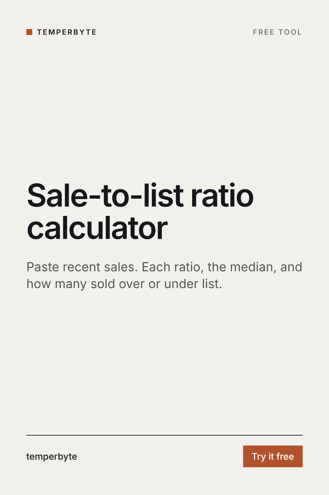

How close to the asking price are homes really selling? Paste recent sales, one per line, and see each ratio, the median and how many sold over or under list.
Sale-to-list ratio = sale price ÷ list price × 100. At 100% the home sold at its asking price, above 100% it sold over, and below 100% under.
The ratio shows how buyers in this market respond to asking prices, not what a home is worth. A high ratio can mean homes were priced right, priced low on purpose, or that the market is hot. Pair it with price per square foot from the comps and with months of inventory.
Arithmetic on the prices you enter, not an appraisal or a forecast. Use your MLS's closed sale data.
Pricing a listing this week? The Pricing Brief skill for Claude turns pasted comps into price per square foot math, outliers explained, a suggested list range with confidence, market signals and seller talking points.
See Pricing BriefOr try the free comps price calculator and months of inventory calculator.
